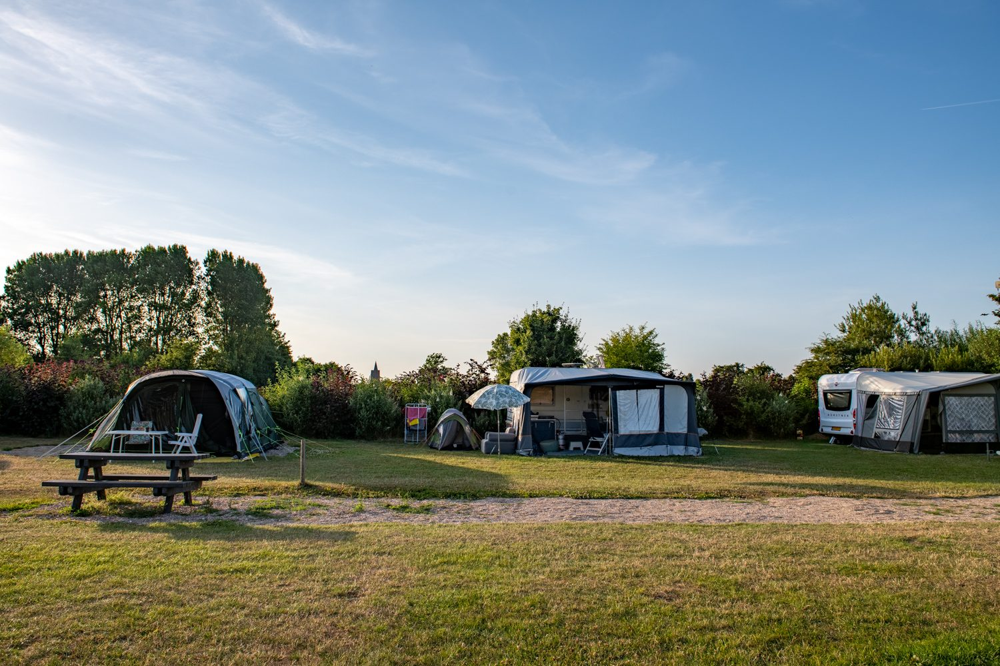
Kampeerplaats
Voor camper, tent of caravan, met stroom (10 ampère), riool, kabel en internet bij de plek.
vanaf € 27,50 p.n.Meer info
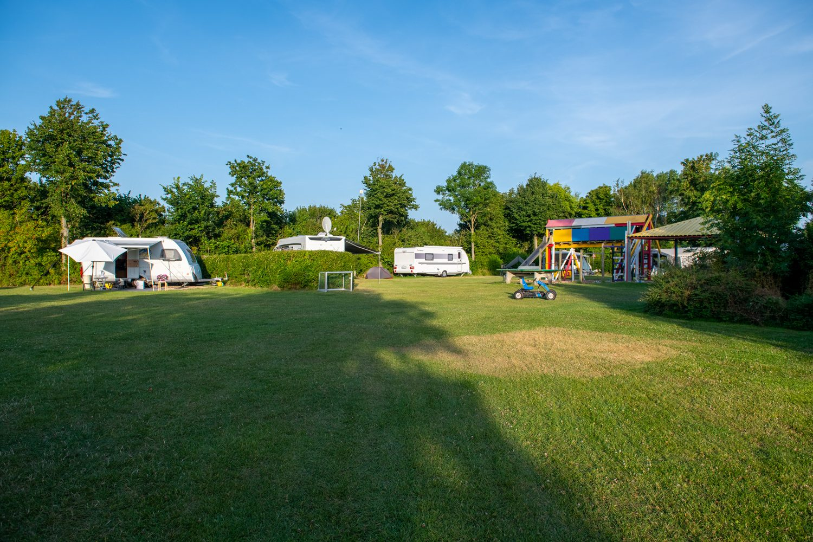
Een echte minicamping met ruime plaatsen en volop ruimte om te spelen, bij ons akkerbouwbedrijf op Walcheren. De Noordzeestranden liggen op 2 km.
Ruime plaatsen van gemiddeld 135 m², verdeeld over meerdere veldjes tussen de bomen en struiken.

Voor camper, tent of caravan, met stroom (10 ampère), riool, kabel en internet bij de plek.
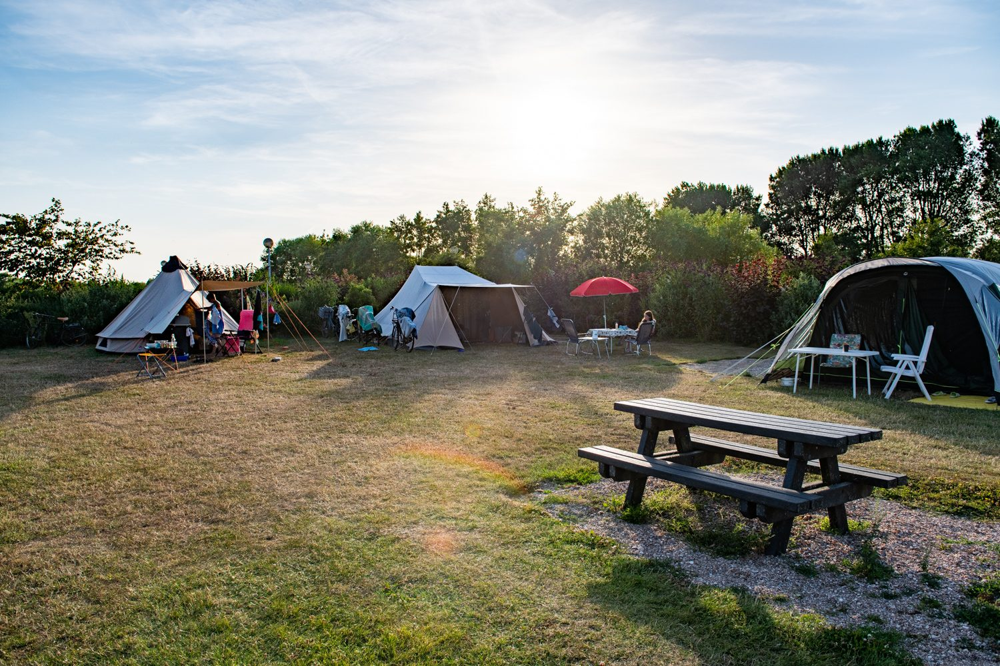
Met een klein tentje voor 1 of 2 personen, bijvoorbeeld als u fietsend of wandelend over Walcheren trekt.
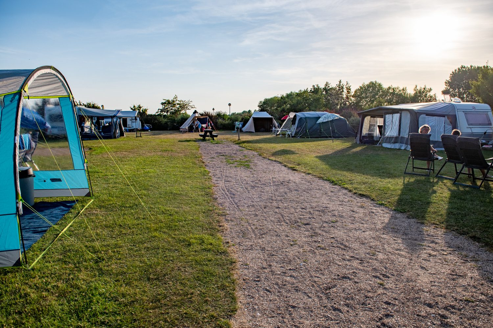
Het hele seizoen uw eigen plek in Zeeland. Voor 2027 hebben we nog enkele plaatsen te vergeven.
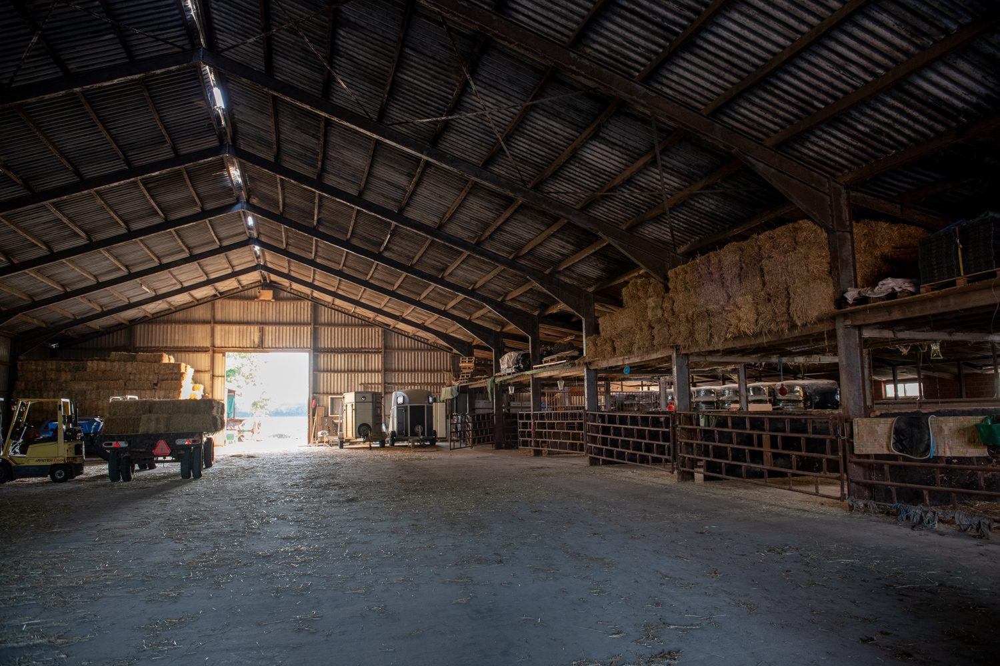
Uw caravan of boot de winter over droog gestald bij ons op het erf, voor een voordelige prijs.
Naast de camping hebben we een gemengd bedrijf met akkerbouw. Er is altijd wat te doen op het erf, en er is veel ruimte voor de dieren: poezen, paarden, kerkuilen, zwaluwen en een hond.
Bij het voeren van de dieren kunt u rustig een kijkje komen nemen. Als daar ruimte voor is, mogen de kinderen helpen met het verzorgen.
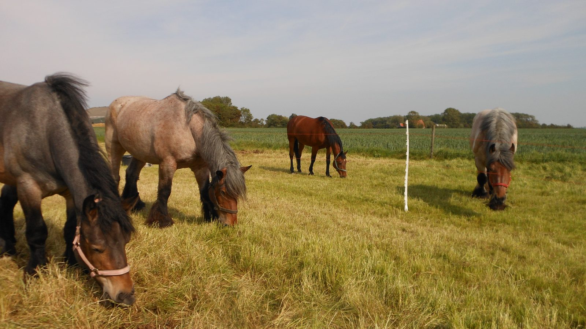
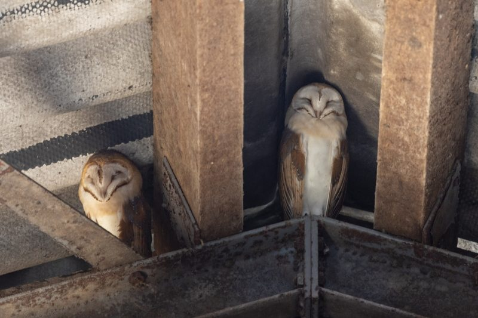
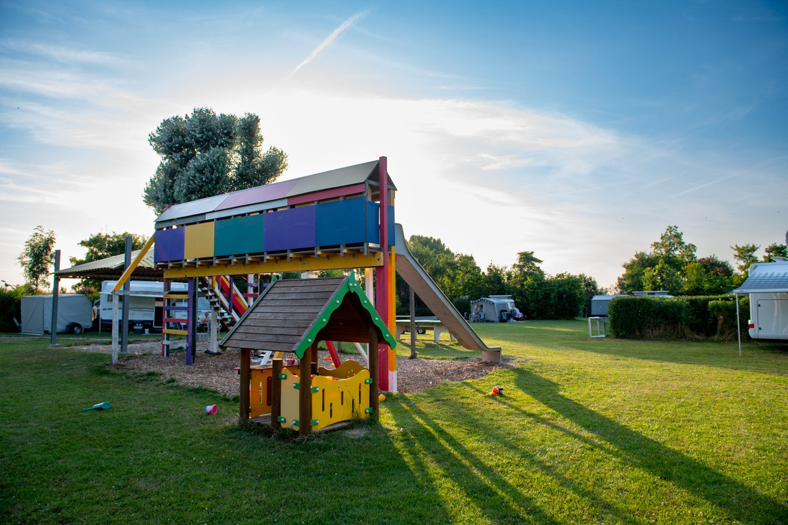
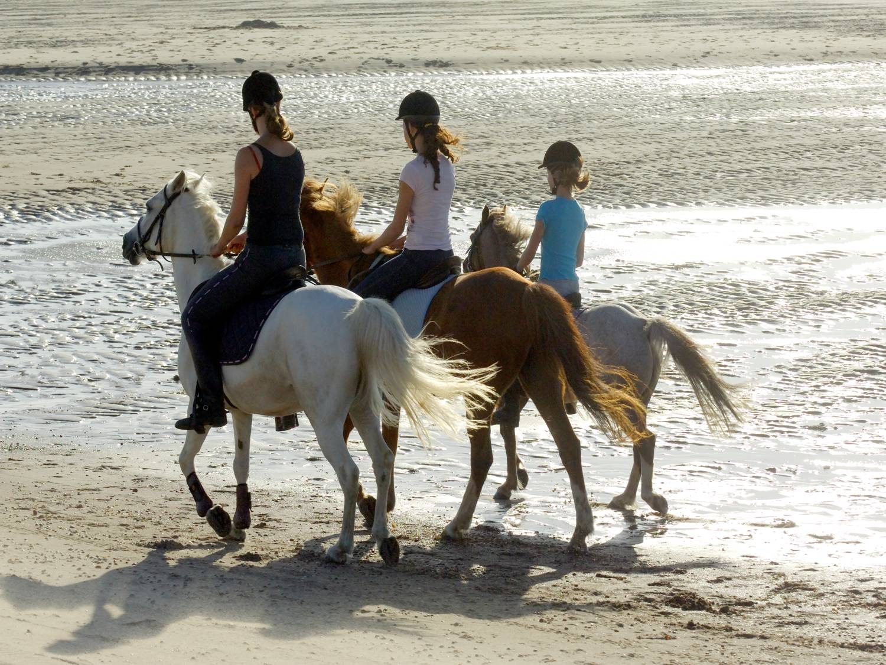
Walcheren is een prachtige omgeving voor paardenliefhebbers. Over het strand en langs de zee, door bos en duin: het kan allemaal, en ruiterpaden zijn er volop.
Wij hebben ruime paardenboxen van 25 m² en een aparte weidegang. Met Snip, onze pony, kunt u de polder in gaan stappen. Twee maneges op fietsafstand verzorgen strand- en bosritten.
Vanaf de camping heeft u veel mogelijkheden: voor wandelaars, fietsers en wie gewoon van de zon en de natuur wil genieten.
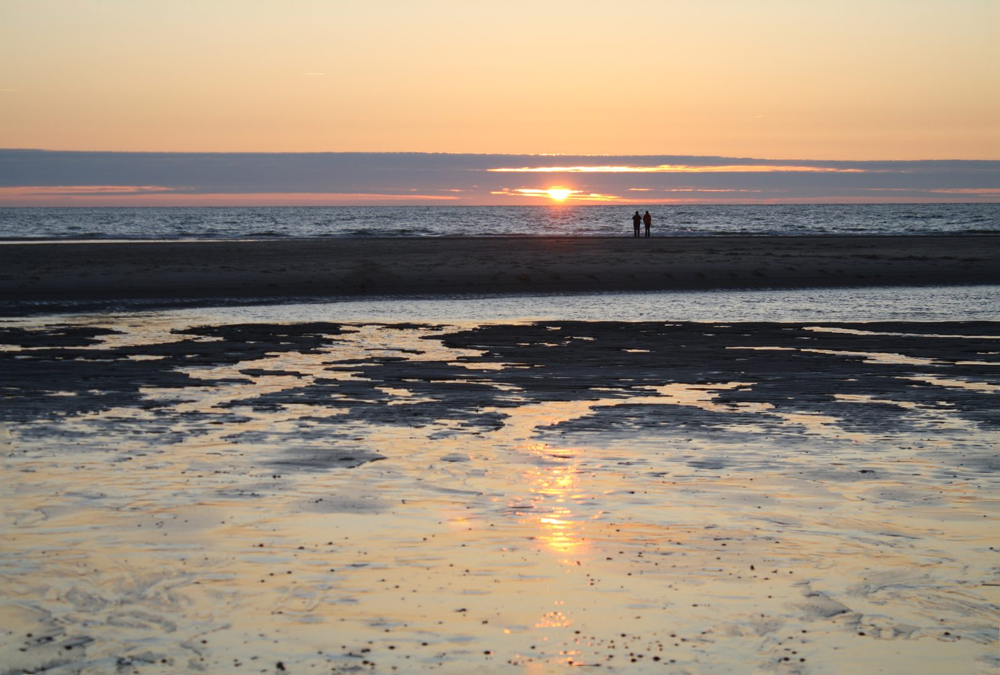
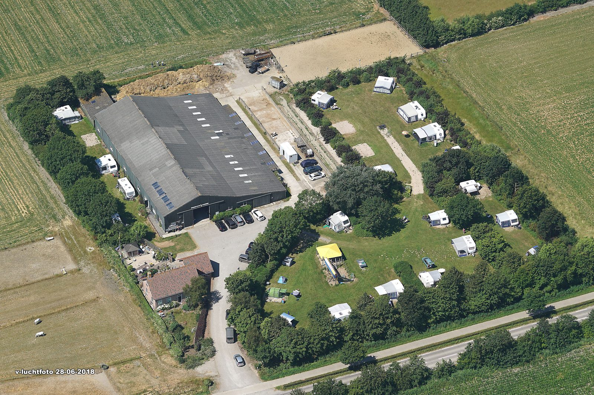
Wij zijn Addie en José de Buck. Op ons erf aan de Grijpskerkseweg combineren we het boerenbedrijf met een kleine camping, waar u de rust en de ruimte van het platteland heeft en toch dicht bij zee zit.
De zorg voor het milieu staat bij ons hoog in het vaandel. Warm water maken we met lichtcollectoren, en het afval wordt gescheiden ingezameld.
Laat ons weten wanneer u wilt komen, met hoeveel personen en met welk kampeermiddel. U hoort zo snel mogelijk van ons.
Stuur ons een appje of bel even. In week 29 tot en met 35 boeken we hele weken, met zaterdag als wisseldag.